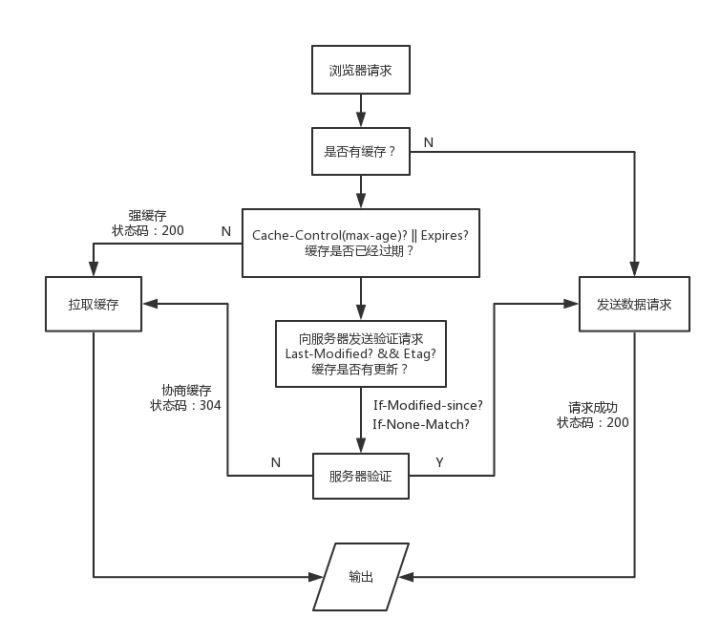
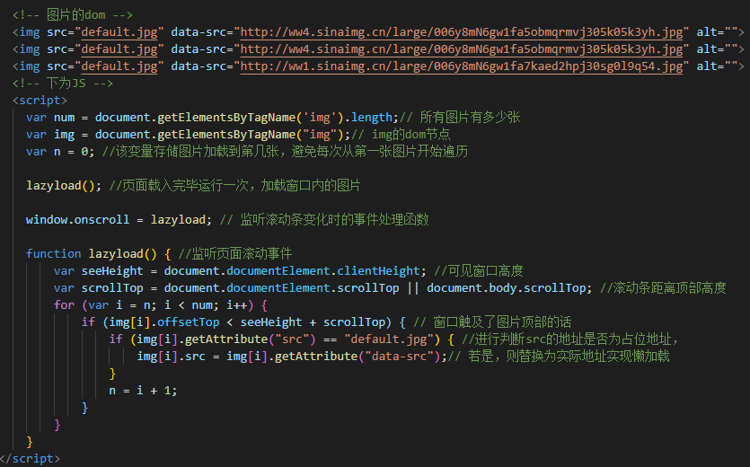

如何进行网站性能优化？
分享人：广州web学员谢俊凯
目录
1.背景介绍
2.知识剖析
3.常见问题
4.解决方案
5.编码实战
6.扩展思考
7.参考文献
8.更多讨论
1.背景介绍
为什么要优化网站？
一个快速反应的网站，能够提升用户体验，页面加载得更快、对用户的操作响应得更快速，能够给用户提供更为舒适的体验。
一个网站的体验，决定了用户是否愿意去了解网站的功能；而网站的功能，决定了用户是否会一票否决网站的体验。
恰当的优化不仅能够改善用户体验且能够节省资源利用。
2.知识剖析
网页的生成：
1.浏览器读取html。浏览器会将HTML转换成一种格式 – 文档对象模型（Document Object Model）简称为 DOM,每一个 HTML 标签都对应着树种的某个节点（DOM节点）。
2.解析CSS。页面上的 CSS 样式被映射到CSS 对象模型（CSS Object Model）。CSS 不阻塞 DOM 的构建，它会阻塞 DOM 的渲染,直到 DOM 和 CSSOM 准备好之前，浏览器什么都不会显示
3.结合DOM和CSSOM，生成一颗渲染树。
4.生成布局（layout），即将所有渲染树的所有节点进行平面合成
5.将布局绘制在屏幕上
这是浏览器读取html到渲染的过程。
3.常见问题
如何优化？
4.解决方案
1，雪碧图：CSS Sprite(CSS精灵)
雪碧图就是一个很好的优化图片加载的例子，当页面有大量的icon的时候，就可以使用雪碧图。
雪碧图的设计理念就是减少页面加载大量图片的请求，只加载一张图片。
2，使用外联的CSS文件和JS文件
简单的说下css的外联内联和内嵌。
从功能上来说，这3个实现的功能是一样的。从权重层级从权重最高的说起，
1：嵌套样式，也就是在head（html的头部）这是一个最先接触到的写法。
<style> div{color:red;} </style>
2：内联"<p
style="color:red;">文字内容<p>"而内联样式也不是没有优点，好处就是减少http请求，提升页面性能，缓解服务器压力。由于浏览器加载完
CSS 才能渲染页面，因此能防止 CSS
文件无法读取而造成页面裸奔的现象。
3：外联样式，使用link链接到指定地址。因为把样式都写到外部文件，所以会加快html的加载速度，且可以缓存到浏览器，提升重复访问时的html加载速度。
而且link的调用是与页面同步加载。
3-1，压缩静态资源----压缩图片和视频
为什么要压缩？
图片和视频的上传一般情况下不需要上传大体积的图片，因为大体积图片很消耗资源，一个是加载耗时比较长，同时也增加了存储的开销,当展示的时候也会消耗下载的带宽，影响加载效率。
如果不压缩，就像我们使用手机网络在线看一些高清视频，因为手机的网络不稳定或者网页的，加载非常慢，像是视频，看半截卡半截，这就是一个非常难受的体验了。
目前比较方便的方法是使用软件进行压缩或者网页进行在线压缩。
不要在浏览器里面缩放图片，比如一个200 像素x
200像素的空间里面放入一个400 x
400的图片，这样做除了加重服务器的负担以外并不会有任何清晰度的提升。
若是一些通用icon可以使用图标库，比如ui框架一般都会提供icon库，或者可以使用link链接访问阿里的矢量图标库http://www.iconfont.cn/
转换格式为WebP格式，这是谷歌开发的一种旨在加快图片加载速度的图片格式。图片压缩体积大约只有JPEG的2/3，并能节省大量的服务器带宽资源和数据空间。Facebook、Ebay等知名网站已经开始测试并使用WebP格式。
兼容的问题目前只支持Chrome（谷歌）和Opera（欧朋浏览器），暂时没看到有大量使用这个的现象，如果想尝试一下可以使用网址：https://www.upyun.com/webp 去进行体验。
3-2，webpake
webpack的功能：可以看做是模块打包机器，
它做的事情是：分析你的项目结构，找到JavaScript模块以及其它的一些浏览器不能直接运行的拓展语言（Scss，TypeScript等），并将其转换和打包为合适的格式供浏览器使用。
同时也能转换、捆绑、打包其他的静态资源，包括css、image、font file、template等。
在使用方面，如果只是单独使用webpack的话，也是有相当多的参数需要学习，但是我们在使用js框架编译打包的时候，使用指令可以实现自动打包，而打包过程就是JS框架封装好的webpack。
4,懒加载：
懒加载的应用在学习路由配置的时候首次接触到的,angular的路由懒加载loadchildren，懒加载的功能是使页面需要用到该文件/模块的时候才进行加载，能够使页面在拥有大量模块的时候（或者图片），不需要一次性加载完成，提升了页面的载入速度。
页面加载太慢往往是因为图片资源过多占用太多加载资源导致的，因为大量图片的话，往往页面载入会非常耗时，所以除了缩小图片体积，使用雪碧图，最重要的就是使用图片的懒加载进行优化。
图片的懒加载，如果页面比较长，或者图片较多的话，首先使用一个轻量级的图片，占位，监听页面的滚轮，如果滚动到当前图片位置的话，就加载该图片，这是懒加载图片的原理。
5，CDN
什么是CDN？CDN的全称是Content Delivery
Network，就是一个内容分发网络。CDN网络的诞生大大地改善了互联网的服务质量.
(1)节省骨干网带宽，减少带宽需求量；
(2)提供服务器端加速，解决由于用户访问量大造成的服务器过载问题；
(3)服务商能使用Web
Cache技术在本地缓存用户访问过的Web页面和对象，实现相同对象的访问无须占用主干的出口带宽，并提高用户访问因特网页面的相应时间的需求；
(4)能克服网站分布不均的问题，并且能降低网站自身建设和维护成本；
(5)降低“通信风暴”的影响，提高网络访问的稳定性。
CDN的基本原理是广泛采用各种缓存服务器，将这些缓存服务器分布到用户访问相对集中的地区或网络中，在用户访问网站时，利用全局负载技术将用户的访问指向距离最近的工作正常的缓存服务器上，由缓存服务器直接响应用户请求。
内容服务基于缓存服务器，也称作代理缓存（Surrogate），它位于网络的边缘，距用户仅有"一跳"（Single
Hop）之遥。同时，代理缓存是内容提供商源服务器（通常位于CDN服务提供商的数据中心）的一个透明镜像。这样的架构使得CDN服务提供商能够代表他们客户，即内容供应商，向最终用户提供尽可能好的体验，而这些用户是不能容忍请求响应时间有任何延迟的。
以上均来自百度。
个人理解的CDN：
租用网络运营商在各个地方架设的缓存服务器，相当于缩短了请求的路径，就近原则获取数据，缩短了数据的请求距离，也分割了大量用户访问的话造成的通信风暴影响，经由各地的服务器进行处理过后发送到主干服务器。
在我看来有点像使用梯子翻墙，我们裸连不使用梯子访问git反应速度很慢，因为git的服务器在国外，虽然没被墙，但是请求数据到获取回应，返回数据什么的因为跨太平洋请求，数据传输延时，所以会很卡。
此时我们使用梯子访问，我们通过运营商服务器，变成外国用户访问，所以访问速度会很快（相对国内）。
6,能缓存就缓存，能缓存多久就缓存多久
缓存的意义就在于减少请求，更多地使用本地的资源，给用户更好的体验的同时，也减轻服务器压力。而缓存又分为强缓存和协商缓存，协商缓存就是每次读取缓存的时候像服务器发送一次请求，是否要读取缓存，强缓存顾名思义，就是强制读取缓存。
两者的区别就是是否需要向服务器验证本地缓存是否还有效。
可能导致的问题：服务端资源更新后，客户端更新滞后
两种缓存都是通过修改请求头的参数进行设定。

5.编码实战


 下为JS
下为JS
6.扩展思考
7.参考文献
博客
简书
8.更多讨论
鸣谢
感谢大家观看
By 谢俊凯